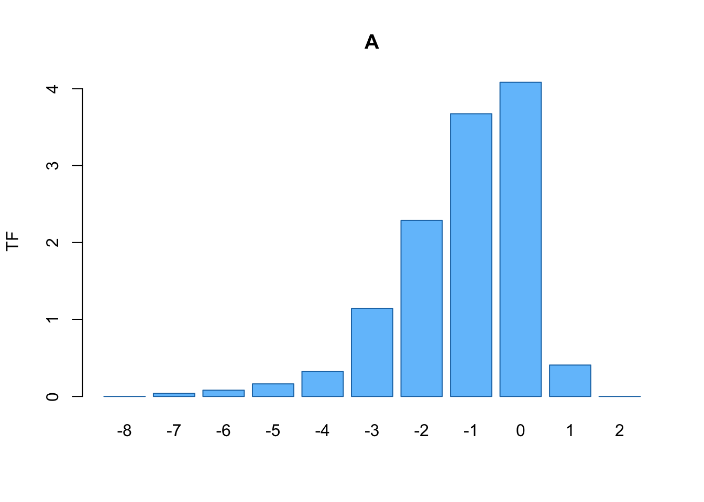

Chapter 5 Topology Preservation Measures
Topology Preservation for TRN’s with natural output space topology is complicated-sounding terminology for what is a fairly simple concept: the TRN should represent adjacencies in its input space by adjacencies in its output space faithfully. Any deviations from this are known as topology violations. Put another way, if two prototypes \(w_i\) and \(w_j\) are neighbors in \(\mathcal{M}\) (e.g., \(\exists\) an edge \(CADJ_{ij} > 0\)), their corresponding neurons \(\nu_i\) and \(\nu_j\) should also be adjacenct according to the topology of the output space \(\mathcal{L}\). For SOM’s \(\mathcal{L}\) is obviously the lattice, whose topology is defined by the rigid rectangular or hexagonal grid structure. Measuring topology (violation) preservation is, then, equivalent to counting the number of neighbor relationships on \(\mathcal{M}\) that are (not) preserved by the TRN’s representation on \(\mathcal{L}\). To motivate this consider the following three cases to which we will return throughout this section:

Figure 5.1: Examples of 1-d TRN
Each panel depicts a sample of observations in 2-d input space (gray points) and the prototypes of a SOM trained on the sample (red points). The SOM lattice adjacencies (output space topology) are shown as red edges. The different effective dimensionalities of both input and output space in the above cases result in various types of topology violation:
- Backward Topology Violations (left panel, case “A”)
At left the sample data lie along a 1-d manifold \(\subset \mathbb{R}^2\) but were learned by a SOM equipped with a 2-d rectangular output lattice. The dimension mismatch between these two spaces (\(dim(\mathcal{L}) > dim(\mathcal{M})\)) has caused the lattice to fold onto \(\mathcal{M}\) such that neighboring lattice neurons are connected to prototypes which are not neighboring in \(\mathcal{M}\) (as gauged by eye for now, this will be formalized below). This is known as a backward topology violation.
- No Topology Violations (middle panel, case “B”)
At middle the same sample data as in case A were learned by an SOM with a 1-d lattice (or chain of neurons). Since \(dim(\mathcal{L}) = dim(\mathcal{M})\) we have no topology violations; the lattice adjacencies correspond perfectly to the adjacencies of the prototypes in \(\mathcal{M}\).
- Forward Topology Violations (right panel, case “C”) At right fully 2-dimensional sample data were learned by a SOM with a 1-d output space. This dimension mismatch (\(dim(\mathcal{L}) < dim(\mathcal{M})\)) has caused \(\mathcal{M}\) to fold onto \(\mathcal{L}\) (i.e., there are neighboring prototypes in \(\mathcal{M}\) that are not neighbors on \(\mathcal{L}\)), which is typically the case with SOM learning.
The measures introduced in this section differ only in how and with what granularity they are sensitive to the various types of topology violations described above (i.e., by weighting or normalizing the counting of violations in various ways). We study a map’s overall topology preservation and instances of topology violations in order to:
- monitor the progress of manifold learning (i.e., SOM training should persist until there is suitable representation of \(\mathcal{M}\)’s topology on \(\mathcal{L}\))
- asses poor learning parameterizations (e.g., severely mis-specified learning rates governing SOM training)
- ensure correct (as possible) topological inference from the TRN (i.e., correctly identifying true cluster structure in the data, and avoiding the identification of spurious structure that might be indicated by violations)
- diagnose severe dimensionality conflicts between the TRN’s input and output space topologies.
The remainder of this reviews several leading measures of topology preservation, which requires us to first clarify some terminology. Let:
- \(\mathcal{M}\) be the data manifold as a (possible) subset of \(\mathbb{R}^d\) (the input space)
- \(\mathcal{L}\) be the output space (\(\mathbb{R}^2\) with an embedded lattice structure for SOMs)
- \(d_a^b(i,j)\) be the distance defined by \(a\) measured on space \(b\) between vertices \(i\) and \(j\) of the TRN.
\(b \in \{\mathcal{M},\mathcal{L}\}\) defines the space in question. \(a \in \{E,G\}\) where \(E\) is Euclidean distance and \(G\) is the geodesic distance on the corresponding graph inherent to space \(b\) (e.g., CADJ on \(\mathcal{M}\) and the lattice for \(\mathcal{L}\)). - \(\eta(i,k,a,b)\) return the \(k\)-th nearest neighbor of vertex \(i\) in space \(b\) according to distance \(a\).
5.1 Topographic Product
The Topographic Product (TP, [11]) provides a global measure of topology preservation through multiplicative accumulation of both backward and forward toplogy violations. This occurs through two intermediary calculations representing ratios of distances between equivalent quantities in our different spaces:
\[ Q_1(i,k) = \frac{ d_E^{\mathcal{M}}(w_i, w_{\eta(i,k,E,\mathcal{L})}) }{ d_E^{\mathcal{M}}(w_i, w_{\eta(i,k,E,\mathcal{M})}) } \]
measures the ratio of Euclidean distances between neighboring prototypes in input space, where the different concepts of “neighbor” (according to both the output and input space topologies) define the ratio. The quantity \(Q_2\) is similar, except that the Euclidean distances are calculated in output space (instead of input space):
\[ Q_2(i,k) = \frac{ d_E^{\mathcal{L}}(w_i, w_{\eta(i,k,E,\mathcal{L})}) }{ d_E^{\mathcal{L}}(w_i, w_{\eta(i,k,E,\mathcal{M})}) }. \]
\(Q_1\) measures backward violations while \(Q_2\) measures forward violations; if there are none then \(Q_1 = Q_2 = 1\). The ratios are combined into the quantity
\[ Q_3(i,k) = \left( \prod\limits_{l=1}^k Q_1(i,l) \times Q_2(i,l) \right)^{\frac{1}{2k}} \]
which measures the overall type of folding from prototype / neuron \(i\) occuring at folding length \(k\). Aggregating this quantity over all possible folding lengths allowed for given the input / output topologies, and all neurons present in the lattice, gives the Topographic Product (TP):
\[ TP = \frac{1}{n_W(n_W-1)} \sum\limits_{i=1}^{n_W} \sum\limits_{k=1}^{n_W-1} \log(Q_3(i,k)) \]
The sign of the TP indicates the overall type of topology violations of the TRN: \(TP > 0 \Rightarrow\) backward violations (case A from above), \(TP \approx 0 \Rightarrow\) no violations (case B above), and \(TP < 0 \Rightarrow\) forward violations (case C above). The Topographic Products of our three example cases are:
Case A has TP = 0.0542559, case B has TP = 0.0019023 while case C has TP = -0.0227994. Earlier we identified each as exhibiting backward, no, and forward topology violations, respectively. The Topographic Product confirms this assessment, based on sign.
5.2 Differential Topographic Function
The geodesic distance of connections in the output (input) topology when represented on the input (output) topology is known as the folding length of a backward (forward) topology violation. By convention, backward violations have a negative folding length, while forward violations have a positive folding length. The Differential Topographic Function (DTF, [12]) counts the number of violating connections at each folding length \(\in [-k,\ldots,k]\). The intermediate quantity \(f_i(k)\) is defined different based on the sign of its folding length argument \[ f_i(k) = \begin{cases} \sum\limits_{j=1}^{n_W} \mathbb{1}[d_G^{\mathcal{L}}(i,j) = k \text{ and } d_G^{\mathcal{M}}(i,j) = 1] & k > 0 \\ \sum\limits_{j=1}^{n_W} \mathbb{1}[d_G^{\mathcal{L}}(i,j) = 1 \text{ and } d_G^{\mathcal{M}}(i,j) = |k|] & k < 0 \end{cases} \] yielding the \(DTF\): \[ DTF(k) = \frac{1}{n_W} \sum\limits_{i=1}^{n_W} f_i(k) \] As folding lengths = 1 are not technically topology violations, \(DTF(k) := 0\) for \(k \in [-1,0,1]\). The DTF of each of the above cases plotted over its apparent folding lengths of each of the cases above is:
The DTF again confirms the conclusion that case A exhibits (mostly) backward violations, case B exhibits no violations, and case C exhibits forward violations.
5.3 Weighted Differential Topographic Function
If the input topology adjacencies are weighted (as is CADJ) the count of violating connections (either backward of forward) identified by the DTF can be multiplied by these weights, producing the Weighted Differential Topographic Function (WDTF, [12]). Using CADJ as the input topology, the \(f\) function above is modified as
\[ f'_i(k) = \sum\limits_{j=1}^{n_W} CADJ_{ij} \times \mathbb{1}[d_G^{\mathcal{L}}(i,j) = k \text{ and } d_G^{\mathcal{M}}(i,j) = 1].
\]
Notice that the backward folding lengths are not captured, as CADJ only represents the forward mapping. The WDTF at each positive folding length is then
\[ WDTF(k) = \frac{1}{\sum CADJ} \sum\limits_{i=1}^{n_W} f'_i(k) \]
where the normalizing constant is the sum of all edge weights in CADJ. The WDTF of our three examples confirms the conclusions of the DTF (where possible), particularly in case C. From the WDTF we also learn that some relatively strong connections are forward violating at large folding length:
5.4 Topographic Function
The Topographic Function (TF, [13]) is an integral representation of the DTF reporting, for each folding length \(k\), the cumulative violations of length larger than \(k\) (whether they be backward or forward): \[ TF(k) = \begin{cases} \sum\limits_{k`=k+1}^{n_W} DTF(k`) & k > 0 \\ \sum\limits_{k`=-n_W}^{k-1} DTF(k`) & k < 0 \end{cases} \]
The TF conveys less detail than the DTF but is included in TopoRNet for completeness. For our three cases, the TF reports:

Evidence of the primarily backward violations of case A and forward violations of B is (perhaps) easier to spot in the TF, but analysts generally would be more interested in knowing the exact length of a violating connection, not a range.
5.5 Calculating TPMs with TopoRNet
As the calculations of topology preservation measures introduced in this section are relatively lightweight TopoRNet computes them all during a call to the method calc_TopoMeasures, which takes as input a matrix of SOM prototype vectors in the TRN’s input space (each \(\in \mathbb{R}^d\)) and a matrix of the neuron coordinates in output space (each usually in \(\in \mathbb{R}^2\) for SOMs). These matrices should be ordered such that row \(i\) and row \(j\) give the prototype (neuron) coordinates of the vertices connected by the edge \(CADJ_{ij}\), as set during initialize_TRN. The input / output topologies (e.g., CADJ and the lattice adjacency for SOMs) used for the TF, DTF and WDTF calculation were stored during initialize_TRN and re-used for these calculations; the inputs to calc_TopoMeasures are needed for TP calculation. Below we compute all TPMs for our SHGR example using the information stored in the SHGR SOM object previously loaded:
## Compute TPMs
## Inputs: SOM prototypes, (x,y) coords of neurons on lattice
SHGR.trn$calc_TopoMeasures(SHGR.som$W, SHGR.som$nu_xy)
% Computing Toplogy Preservation Measures:
% ++ Topographic Product ... done
% ++ CADJ Topographic Functions ... done
% ++ CONN Topographic Functions ... doneThe TP result is stored as a scalar field which can be retrieved via
while the various Topographic Functions are stored as a data frame whose rows report each measure computed at the various folding lengths apparent in the mapping. Here, we extract the TFs computed using the CONN graph:
## The CONN Topographic Functions
SHGR.trn$CONN_TopoFxns
% k TF DTF WDTF
% 1 -14 0.000000000 0.004878049 0.0000000000
% 2 -13 0.004878049 0.009756098 0.0000000000
% 3 -12 0.014634146 0.014634146 0.0000000000
% 4 -11 0.029268293 0.000000000 0.0000000000
% 5 -10 0.029268293 0.000000000 0.0000000000
% 6 -9 0.029268293 0.000000000 0.0000000000
% 7 -8 0.029268293 0.004878049 0.0000000000
% 8 -7 0.034146341 0.000000000 0.0000000000
% 9 -6 0.034146341 0.014634146 0.0000000000
% 10 -5 0.048780488 0.024390244 0.0000000000
% 11 -4 0.073170732 0.024390244 0.0000000000
% 12 -3 0.097560976 0.107317073 0.0000000000
% 13 -2 0.204878049 0.204878049 0.0000000000
% 14 -1 0.409756098 0.000000000 0.0000000000
% 15 0 2.443902439 0.000000000 0.0000000000
% 16 1 2.034146341 0.000000000 0.0000000000
% 17 2 1.453658537 0.580487805 0.0142211914
% 18 3 1.024390244 0.429268293 0.0079956055
% 19 4 0.380487805 0.643902439 0.0152587891
% 20 5 0.073170732 0.307317073 0.0072021484
% 21 6 0.019512195 0.053658537 0.0014648438
% 22 7 0.000000000 0.019512195 0.0005493164TopoRNet also provides a visualization for the TFs computed and stored in a TRN object:
References
[11] H.-U. Bauer, K. Pawelzik, and T. Geisel, “A topographic product for the optimization of self-organizing feature maps,” in Advances in neural information processing systems 4, J. E. Moody, S. J. Hanson, and R. P. Lippmann, Eds. Morgan-Kaufmann, 1992, pp. 1141–1147.
[12] L. Zhang and E. Merényi, “Weighted differential topographic function: Arefinement of the topographic function,” in In proc. 14th european symposium on artificial neural networks (esann’2006, 2006, pp. 13–18.
[13] T. Villmann, R. Der, M. Herrmann, and T. M. Martinetz, “Topology preservation in self-organizing feature maps: Exact definition and measurement,” IEEE Transactions on Neural Networks, vol. 8, no. 2, pp. 256–266, 1997.